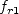
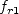

Public Access (formerly Langley Research Center)Turbulence Modeling Resource |
K-e-Rt Turbulence Model
This web page gives detailed information
on the equations for the three-equation k-e-Rt turbulence closure.
All forms of the model given on this page are linear eddy viscosity models.
Linear models use the Boussinesq assumption for the constitutive relation:
Unless otherwise stated, for compressible flow with heat transfer this model is implemented as described on the page
Implementing Turbulence Models into the Compressible RANS Equations, with perfect gas
assumed and Pr = 0.72, Prt = 0.90, and Sutherland's law for dynamic viscosity.
Return to: Turbulence Modeling Resource Home Page K-e-Rt Model
(k-e-Rt)
This model's reference is:
Two earlier related references are:
This three-equation model (written in conservation form) is given
by the following:
The production term is:
with
The extra source term in the
Far from walls,
. Near walls, it
grows to very large values.
The sink term D is given by:
where (U0, V0, W0)
represents the velocity vector of the frame-of-reference.
The D term is active only in the immediate vicinity of walls;
further away, it vanishes. In the present model the following damping
functions are adopted:
The eddy viscosity is given by:
The closure coefficients are:
There are no specific farfield boundary conditions recommended for this model.
Generally they are set based upon the desired freestream turbulence intensity
and turbulence length scale. (In this model, the turbulence does not decay
in the freestream.)
At the wall, the
K-e-Rt Model with Rotation/Curvature Correction
(k-e-Rt-RC)
This model applies the RC correction of Shur, M. L., Strelets, M. K., Travin, A. K., Spalart, P. R.,
"Turbulence Modeling in Rotating and Curved Channels: Assessing the Spalart-Shur Correction,"
AIAA Journal Vol. 38, No. 5, 2000, pp. 784-792,
https://doi.org/10.2514/2.1058.
There is no formal reference for this model other than the CFD++ User's Manual. However, the change is
simply to multiply the production term of the
Return to: Turbulence Modeling Resource Home Page
Recent significant updates:

where k is the turbulence kinetic energy,
 is the turbulence
kinetic energy dissipation rate, and
is the turbulence
kinetic energy dissipation rate, and
 is an undamped pseudo-eddy viscosity.
is an undamped pseudo-eddy viscosity.

 equation is:
equation is:
The large eddy time scale is:

and the realizable time scale, which reduces to the corresponding
Kolmogorov scale for small (dissipative) eddies, is:

The turbulence Reynolds number
 (different from the transported
pseudo-eddy viscosity
) is:
(different from the transported
pseudo-eddy viscosity
) is:
The damping function is given by:
with

where


where  is the
mean strain magnitude. There are two choices for the
is the
mean strain magnitude. There are two choices for the
 parameter:
parameter:
 (for the
Schwartz or "weak" realizability) and
(for the
Schwartz or "weak" realizability) and
 (for the
Bradshaw or "strong" realizability).
The former is used in general, and is considered the standard for
this model.
However, the latter is usually recommended for high speed flows (e.g.,
transonic and higher) as well as for impinging flows at all speeds.
The particular value
used should always be reported.
(for the
Bradshaw or "strong" realizability).
The former is used in general, and is considered the standard for
this model.
However, the latter is usually recommended for high speed flows (e.g.,
transonic and higher) as well as for impinging flows at all speeds.
The particular value
used should always be reported.


 and
boundary
conditions are simple Dirichlet, and
is finite:
and
boundary
conditions are simple Dirichlet, and
is finite:

where n is the wall-normal coordinate direction.

 equation in (k-e-Rt) by the
 term from the above reference as follows:
equation in (k-e-Rt) by the
 term from the above reference as follows:
where
is described on the SA-RC page.
6/30/2015 - mention Pr, Pr_t, and Sutherland's law
Page Curators: Christopher Rumsey,
Ethan Vogel,
Clark Pederson
Last Updated: 11/08/2021